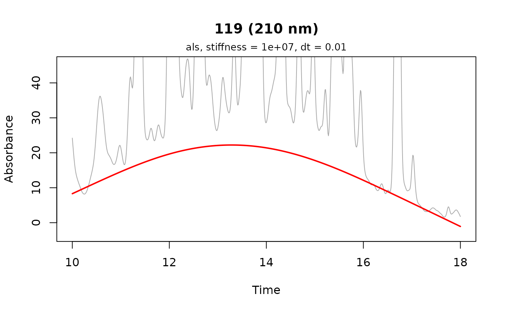

Plots the baseline retained by preprocess or correct_baseline over
the trace it was estimated from, annotated with the estimator, smoothing
parameter and sampling interval that produced it.
Usage
plot_baseline(
x,
lambda = NULL,
idx = 1,
zoom = TRUE,
col = "red",
lty = 1,
lwd = 2,
add = FALSE,
annotate = TRUE,
...
)Arguments
- x
A matrix or vector with an attached
"estimated_baseline", or a list of such matrices, as returned bypreprocessorcorrect_baselinewithattach_baseline = TRUE.- lambda
Wavelength to plot, as a string or number. Optional for a single-wavelength chromatogram.
- idx
Index or name of the chromatogram to plot, if
xis a list. Defaults to1.- zoom
Logical. Whether to scale the y axis to the baseline, letting the peaks run off the top of the panel. At full scale the baseline is usually pressed against the axis, which hides the estimate bending up into a peak. Defaults to
TRUE; setFALSEto see the whole trace.- col, lty, lwd
Graphical parameters for the baseline itself. The trace beneath it is always drawn in gray.
- add
Logical. Whether to draw the baseline over an existing plot rather than starting a new one, for comparing two estimates on the same trace. The title and annotation are drawn only by the first call, and
...is ignored. Defaults toFALSE.- annotate
Logical. Whether to annotate the plot with the estimator, its smoothing parameter and the sampling interval. Set
FALSEwhen overlaying two estimates withadd, since a single annotation cannot describe both; label them withlegendinstead. Defaults toTRUE.- ...
Additional arguments to
plot, which override the defaults chosen here —main = ""suppresses the title, and an explicitylimoverrideszoom.
Value
The annotation label, invisibly, so it can be reused in a
legend. The plot is rendered to the active graphics
device.
Details
The plot uses base graphics. For other plots, extract the baseline with
get_baseline.
Examples
# \donttest{
data(Sa)
x <- preprocess(Sa[1], dim1 = seq(10, 18, by = .01),
dim2 = seq(200, 318, by = 2), attach_baseline = TRUE,
show_progress = FALSE, cl = 1)
plot_baseline(x, lambda = 210)

# }